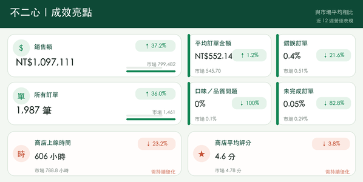
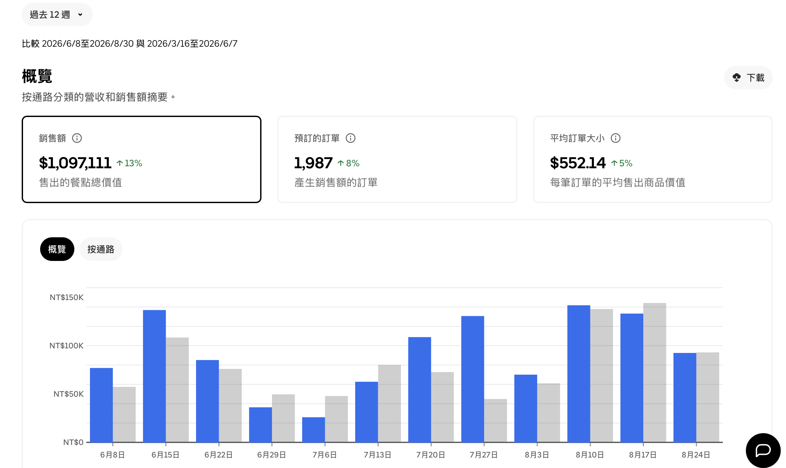

過去 12 週營運成果三個核心指標，
三個核心指標，
一起往上走。
數據取自店家提供的 Uber Eats 商家後台截圖。
市場比較不只比自己進步，
不只比自己進步，
核心營運數字也高於市場。
同一份後台資料顯示，銷售額與訂單數均高於市場平均三成以上；品質相關指標則維持較低比例。

查看完整數字對照
| 指標 | 不二心 | 市場平均 | 比較 |
|---|---|---|---|
| 銷售額 | NT$1,097,111 | NT$799,482 | ↑ 37.2% 以上 |
| 所有訂單 | 1,987 | 1,461 | ↑ 36.0% 以上 |
| 平均訂單金額 | NT$552.14 | NT$545.70 | ↑ 1.2% 以上 |
| 錯誤訂單 | 0.4% | 0.51% | ↓ 21.6% 以下 |
| 口味和品質問題 | 0% | 0.1% | ↓ 100.0% 以下 |
| 未完成訂單 | 0.05% | 0.29% | ↓ 82.8% 以下 |
| 商店上線時間 | 606 小時 | 788.8 小時 | ↓ 23.2% 以下 |
| 商店平均評分 | 4.6 | 4.78 | ↓ 3.8% 以下 |
上線時數與平均評分仍有優化空間；本頁完整呈現資料，不只展示正向指標。
原始資料
讓數字有憑有據。
可展開查看店家提供的後台截圖，確認統計期間、核心指標與市場比較。
0112 週營運概覽與趨勢＋

02與市場平均值比較＋

每間店，都有自己的成長路徑先看懂數字，
先看懂數字，
再決定下一步。
不同店型、商圈與活動條件會產生不同結果。本案例呈現特定期間成果，不構成固定營收保證。
12 週公開成果紀錄